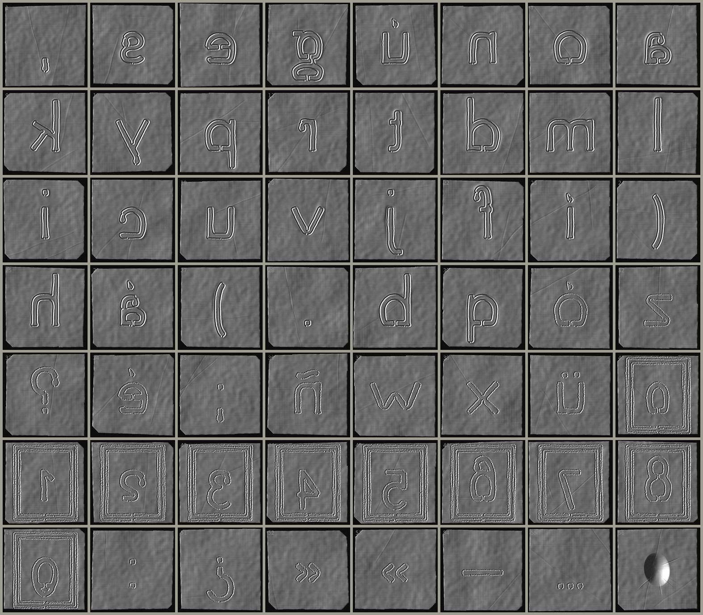

placa, por las dos caras
Papel de aluminio de cocina, cortado a tijera y repujado por el reverso.
El calco se da vuelta y se repasa por el reverso con un punzón de bola de 1 mm, sobre una base blanda. Por el reverso, la letra queda al revés y hundida: una canaleta con dos lomas bajas, un canal que podría contener agua. Por el anverso se lee, en relieve.
La hoja se corta a tijera: cada lado en dos o tres cortes, con un escalón donde la tijera se retoma. A veces una esquina se va en diagonal. Donde la mano arranca y donde se detiene, el punzón hunde un poco más.
119 placas y 86,0 horas de repujado simulado. Las que se rompen no se corrigen: se guardan en la caja y se hace otra.
Moverse como se mueve la piedra,
es decir, apenas, es decir, temblor,del poema
